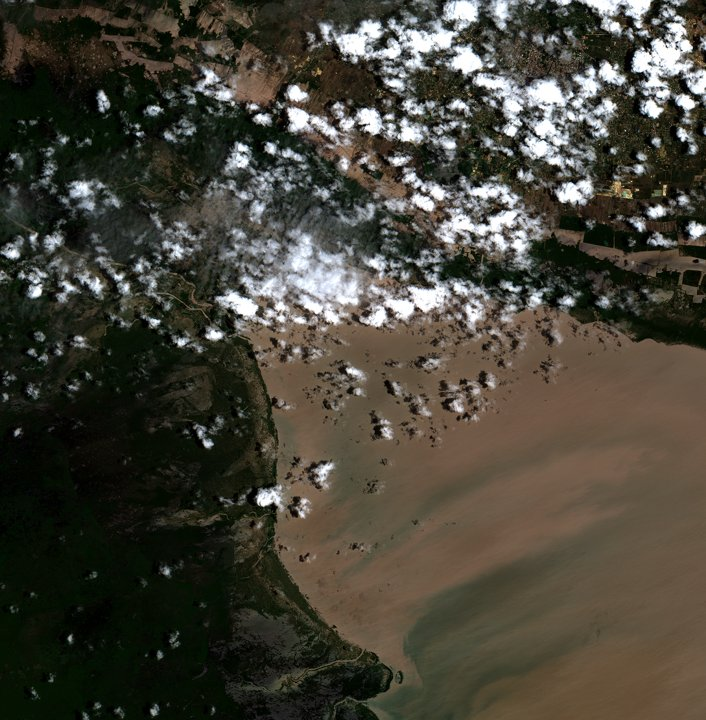
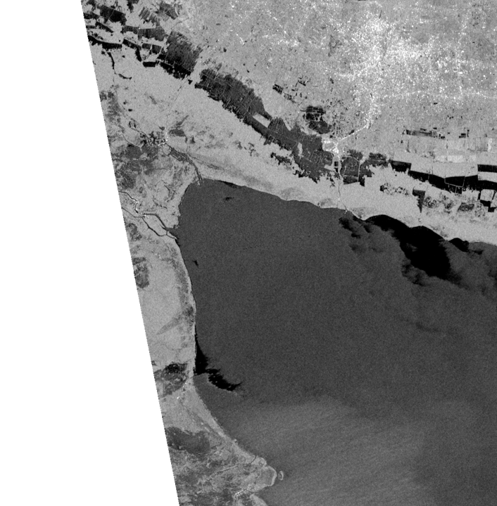
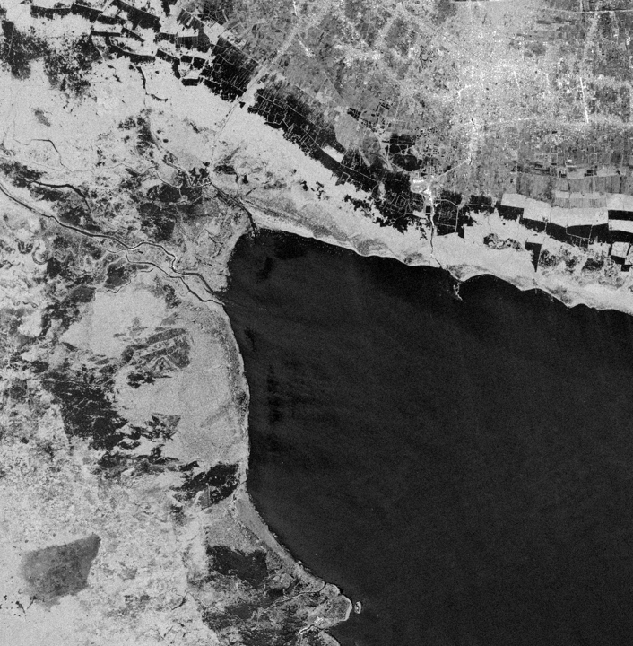

NASA Space Apps 2026 · Dancing with SARs · Team CODEV - Alpha
The Invisible Flood
Every year, Cambodia's great lake breathes in, swelling deep into a forest that is meant to flood. Clouds and leaves hide it from view. A new radar satellite, NISAR, lets us watch it happen.
June → October
by late August
through every cloud
Chapter 1
A lake that breathes
Tonle Sap is Southeast Asia's largest freshwater lake. In the dry season it is a shallow pool of about 2,500–3,000 km². Then the monsoon arrives, the Mekong River rises, and something remarkable happens: the river that drains the lake turns around and pushes water back into it.
The lake grows to as much as 13,000 km², about five times its dry-season size, and from about 3.6 m to more than 10 m deep. Nowhere else in the world does a river reverse on this scale.
Sources: Mekong River Commission, Flood Report (2005); Ji et al., Hydrology and Earth System Sciences (2022).
Chapter 2
A flood that gives life
Here, the flood is not a disaster. It is the lake's heartbeat. The trees of the flooded forest stand in water for months every year, and they are built for it. When the water rises around their trunks, fish swim in to spawn and feed among the branches, leaves and fruit.
This underwater nursery feeds one of the world's largest inland fisheries: a catch of about 600,000 tonnes a year. On the map, the bright green band is flooded forest along the north shore on 30 August.
Sources: National Geographic (fish biologist Zeb Hogan, 2020); Stimson Center Mekong Dam Monitor.
Chapter 3
The real danger: a weaker heartbeat
The threat to Tonle Sap is not too much flood. It is too little.
In 2019 and 2020 the river reversed late, after low rains and with dams upstream holding water back. Fishing families felt it at once.
So the question that matters is simple: how far does the flood reach into the forest each year, and when? That is exactly what is hard to see.
Sources: Ji et al., HESS (2022); Lohani et al., Water (via National Geographic); Mekong River Commission (2020); WMO El Niño update, Sept 2026.
Chapter 4
Why the flood is invisible
The flood peaks in the monsoon, when clouds cover the sky. And even on a clear day, a camera in space sees only treetops: the water is underneath. Here is the same 40 × 40 km area at the end of August, seen three ways.

Half cloud. Under the leaves: nothing.

Flooded forest: faint.

Flooded forest: clear, ~3× stronger.
NISAR's radar waves are about 24 cm long, the length of a school ruler. They slip between the leaves and reach the water below. Shorter waves mostly bounce off the leaves.
Technical details
Sentinel-2 L2A 27 Aug 2026: 52% cloud inside our area (30 Aug: 100%). Flooded-forest ring vs other trees on 30 Aug: NISAR L-band HH +2.3 dB; Sentinel-1 C-band VV +0.8 dB (VH +1.0 dB). The ring was chosen from NISAR's 18 Aug image so 30 Aug noise cannot favour NISAR. Sentinel-1 covers 74% of the area that day (blank strip on the left). Radar panels: same grey scale, −22 to +2 dB.
Chapter 5
How radar sees water under trees
NISAR doesn't take photos. It sends its own microwave pulses, day or night, through cloud, and measures how much bounces back.
Calm water acts like a mirror and sends the pulse away, so it looks dark. Under trees, the pulse hits the water, then a trunk, and comes straight back: a “double bounce” that looks very bright. Dry leaves scatter it in all directions: medium.
Drag the divider on the map: June on the left, late August on the right. The forest along the shore lights up as water arrives beneath it.
Technical details
The bright return is “double bounce”, strongest in HH polarization (sent and received horizontally). In tree cells, HH minus HV rose from 4.9 dB (June) to 7.7 dB (late September), which points to water under trees rather than more leaves. Open water = HH below −15 dB; flooded forest = tree cells with HH at or above −5 dB (broad) or −3 dB (strict); 100 m cells; tree cells = ESA WorldCover 2021 tree class covering ≥ 50% of the cell.
Chapter 6
One picture, three moments
We can paint time into a single radar image. Each colour channel is a different date: red = 30 Aug, green = 19 Jun, blue = 17 Oct. A place gets the colour of the date(s) when it was brightest.
- Pink: forest that lit up in Aug–Oct. That's the hidden flood beneath the trees.
- Olive: bright in June and August, then under open water by October.
- Green: bright in June, then swallowed by open water by August.
- Dark red: rice fields, bright only in late August.
- Black: the lake, dark on every date.
- White: the town of Siem Reap, bright on every date.
Technical details
NISAR HH, 100 m, each channel stretched from −16 to −1 dB: R = 2026-08-30, G = 2026-06-19, B = 2026-10-17. A standard multi-temporal radar composite.
Chapter 7
Watch the lake breathe
Eleven NISAR images, one every 12 days. Watch the map:
- June–July. Quiet: little water under the trees.
- Late August. Water spreads beneath the forest. Flooded forest grows about 8×, to roughly 310 km².
- September–October. The water rises over low trees and shrubs and into the rice fields, which turn blue like open water. Open water reaches about 1,050 km².
A satellite instrument gap left no images between 26 July and 17 August.
Chapter 8
The hidden flood comes first
Put both curves on the same scale, each as a share of its own peak, and a pattern appears:
The water first spreads under the canopy (bright green). Then it rises over the low trees and shrubs, which disappear beneath the surface and turn blue on the map. So the hidden flood shrinks while the open flood keeps growing.
Chapter 9
How long was it under water?
For each 100 m square we counted how many of the ten 12-day images showed it flooded, as open water or flooded forest. Darker means wet for longer: the core of the fish nursery.
Maps like this, made every year, would show whether the nursery is shrinking. That is exactly the kind of change the 31% forest loss and the weakening flood pulse warn about.
Chapter 10
Who can use this
Chapter 11
What we can't see (yet)
- A short record. NISAR's images here start in June 2026, so we can't yet compare with past years.
- A gap. A satellite instrument gap hides late July to mid-August, just as the flood takes off.
- Untested cut-offs. Our water and flooded-forest thresholds are standard values, not checked on the ground. Very dense forest can hide some flooding even from NISAR.
- Map labels. The land-cover map (2021) calls some low shrubland “forest”. Part of the forest that “vanishes” in October is shrubland fully under water.
- One puzzle. A small bump on 1 July that we can't explain yet.
Chapter 12
What's next for NISAR
NISAR images every spot on Earth every 12 days (more often, combining its passes), and the data are free. With the same simple method we could:
- track the flood pulse every year and see the draining in the next images;
- compare years as the record grows, and flag years when the forest floods less than usual;
- apply it to other flooded forests: the Amazon, the Congo basin, Southeast Asia's peat swamps.
The lake breathes every year. Now we can watch.
Explore the data
The map is yours. Use the controls at the bottom of the screen. Click any spot inside the image to see how it changed on every date.
Open water (km²)
Flooded forest (km²)
Shaded: instrument gap, no images. Hollow point: 29 Oct, a newer processing version. Click a point to jump to that date.
⬇ Download the numbers (series.csv) ⬇ Flood-map areas (classes.csv)
Technical details
NISAR L2 GCOV, track 083 ascending, frame 008, 20 m pixels averaged to 100 m in linear power. Jun 19 – Oct 17: provisional products (CRID P05023); Oct 29: validated product, newer processing version (P05036). Click values are read from the grey radar images (−22 to +2 dB, ±0.05 dB). Radar colour layer: red = HH, green = HV, blue = HH÷HV, fixed stretch for all dates.
About
Team CODEV - Alpha · United Arab Emirates
- Abdul Bari Mohammed Abdul Kaleem
- Abdurahman Khan
- Sajid Ali
- Bashaer Abdulla Aljneibi
Data: NISAR L2 GCOV (NASA/ISRO) via NASA Earthdata / ASF DAAC · Sentinel-1 RTC and Sentinel-2 L2A (ESA Copernicus) via Microsoft Planetary Computer · ESA WorldCover 2021 · basemap © OpenStreetMap contributors.
Open source (MIT): code on GitHub · how we did it (methods) · ↑ back to the story